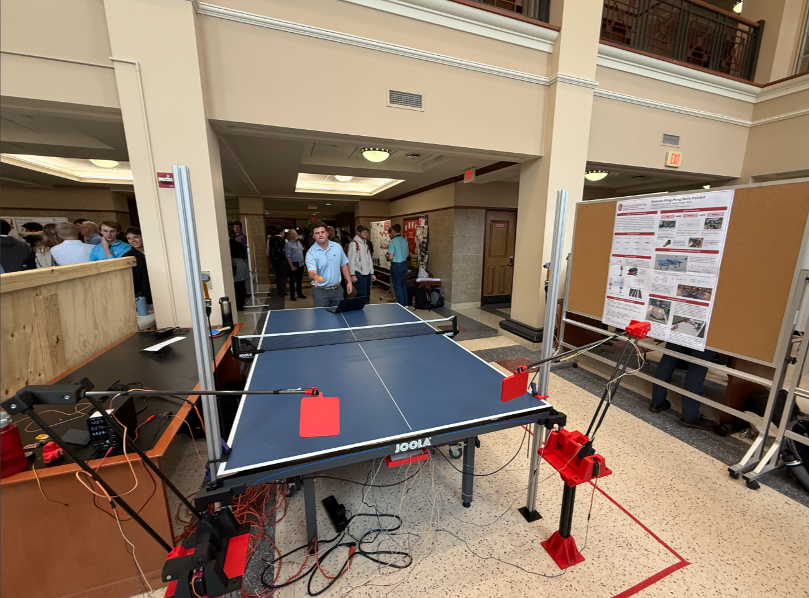
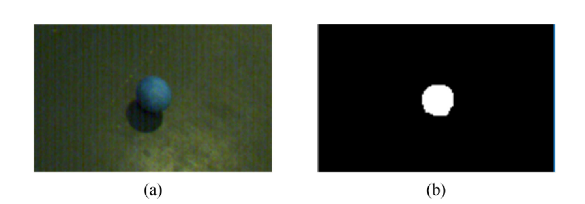
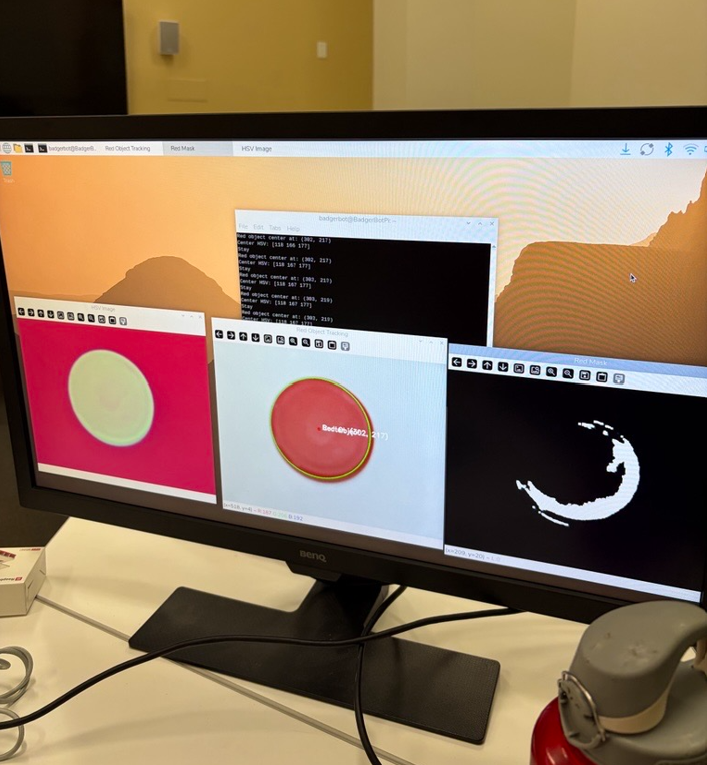
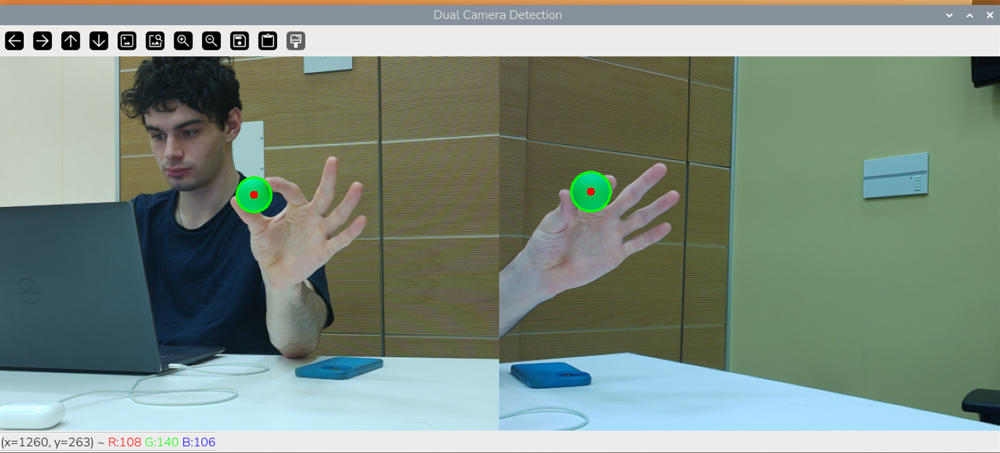
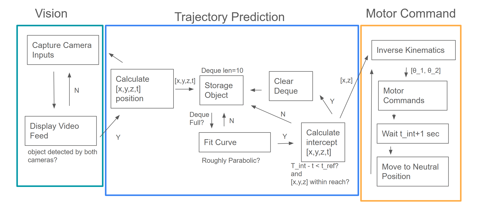

See it in action
The video below shows the full system running — stereo tracking, inverse kinematics, and servo actuation responding to a ball in real time.
A robot that plays ping pong
My team built a robotic arm capable of playing ping pong against a live opponent in real time. We submitted our concept to the UW-Madison Borgen Design Competition, where we won funding to pursue the full build.
Borgen Design Competition — Selected for funding after pitching to the UW-Madison engineering review panel.

The system combines real-time ball tracking, 3D position mapping, inverse kinematics, and servo-driven arms — all synchronized to respond to a ball in flight.
Detecting the ball in real time
The first milestone was reliable ball detection. Using a Raspberry Pi, Pi Camera, and OpenCV, we built a color-based tracking pipeline that runs continuously to extract ball position.
HSV masking
Convert the camera feed to HSV color space and isolate the ball's hue range, producing a binary mask.
Contour detection
Fit a contour around the mask and extract the centroid to get a precise 2D position each frame.
Zone-based servo control
Divide the frame into left, center, and right zones. Dispatch the matching PWM signal to the servo.


Proof of concept: A small servo coupled to the tracking script follows the ball left and right in real time with no perceptible lag.
A 2D scaled-down testbed
Before tackling the full 3D problem, we built a pinball-inspired platform — a flat surface with two servo-driven bumpers and a top-mounted camera looking straight down.
This gave us a controlled environment to validate tracking and actuation logic, and served as our formal capstone progress report demo.
Extending into three dimensions
The full system requires knowing where the ball is in 3D space. We deployed two cameras in a stereo configuration and wrote an algorithm that converts pixel coordinates from each feed into a single 3D world position.

With position data in hand, we built two robotic arms from servo motors and 3D-printed linkages. Each arm has two degrees of freedom. An inverse kinematics script translates world coordinates into joint angles, and the arms track the ball in real time.

From pixels to world coordinates
Each camera is a projective device: it collapses a 3D world point down to a 2D pixel. The goal of triangulation is to reverse that process — given two 2D observations from calibrated cameras, recover the single 3D point that produced both.
Pinhole camera model
Each camera projects a world point X = (X, Y, Z) to a pixel x = (u, v) through a 3×4 projection matrix P = K[R | t]. K encodes the lens (focal lengths fx, fy and principal point (cx, cy)); [R | t] encodes where the camera sits in the world.
World → camera → pixel
R rotates the world point into the camera's own frame; t = −Rc shifts the origin to the camera center. The depth component Zc is then divided out and the result is scaled and shifted into pixel coordinates: u = fx(Xc/Zc) + cx.
Camera calibration
Each Pi Camera is calibrated with a checkerboard target using OpenCV's
calibrateCamera, which recovers K and lens distortion
coefficients for each camera. Distortion is removed with cv2.undistort
before any further processing.
Stereo geometry
The two cameras are placed symmetrically at (−0.5, 0.5, 0) and (0.5, 0.5, 0), each angled 20° inward and 20° downward. The look direction of Camera 1 is vz = [sin α cos β, −sin β, cos α cos β]T; Camera 2 mirrors it across the YZ plane. The rotation matrix for each camera is built from its axis vectors, then transposed (since R−1 = RT for orthogonal matrices).
Triangulation via SVD
Each pixel observation gives two linear constraints on the unknown 3D point.
Stacking the constraints from both cameras yields a 4×4 homogeneous system
A X = 0, solved by SVD: the solution is the right
singular vector with the smallest singular value — exactly what
cv2.triangulatePoints() does internally. The result is a homogeneous
4-vector; dividing by its last component gives (X, Y, Z).
Reprojection check
The recovered 3D point is projected back through each camera and compared against the original pixel observation. Sub-pixel reprojection error confirms the triangulation is geometrically consistent.
- λ
- depth scale factor (= Zc), divided out at the end
- K
- intrinsic matrix: focal lengths fx, fy and principal point (cx, cy)
- [R | t]
- extrinsic matrix: rotation and translation from world frame to camera frame
- pkT
- k-th row of the projection matrix P
- u, v
- observed pixel coordinates for this camera
- (X', Y', Z', W)
- raw homogeneous output of
cv2.triangulatePoints - W
- homogeneous scale — divide through to recover metric coordinates
The output — a timestamped (X, Y, Z) coordinate — is written to a CSV each frame and fed into the inverse kinematics solver and trajectory predictor in parallel.
Pipeline summary: BGR frames → HSV mask → centroid (u, v) per camera
→ undistort → cv2.triangulatePoints (SVD) → (X, Y, Z) →
CSV + trajectory plot.
Anticipating where the ball will be
Pure reactive tracking has an inherent problem: by the time the arm receives a position update and moves, the ball has already traveled further. At game speeds, this lag leads to misses. Our solution is to predict where the ball will be when the arm arrives, rather than chasing where it was.
Position history buffer
We maintain a rolling buffer of the last N timestamped 3D positions. Noisy outliers are rejected with a simple velocity-consistency filter before the buffer is used for fitting.
Parabolic fitting
A ping pong ball in flight follows projectile motion. We fit separate 1D parabolas to the X(t), Y(t), and Z(t) time series using least-squares regression, giving us six coefficients (one quadratic polynomial per axis).
Impact point estimation
We solve each parabola for the time t* at which Z equals the paddle plane depth. Evaluating X(t*) and Y(t*) gives the predicted impact point in the paddle's 2D plane.
Arm pre-positioning
The predicted impact point is fed into the IK solver ahead of time, so the arm begins moving to the intercept position while the ball is still in flight — not after it arrives.
- q(t)
- ball position along a single axis at time t
- a
- acceleration term — dominated by −½g on the vertical axis; near-zero on horizontal axes (drag neglected)
- b
- initial velocity component along the axis
- c
- initial position at t = 0
- A
- Vandermonde matrix built from timestamps: each row is [ti2, ti, 1]
- q
- vector of observed positions along the axis
Spin and air drag are secondary effects at ping pong speeds and are intentionally omitted from the v1 model. The parabolic approximation is accurate enough over the short flight distances in our setup (<2 m) to achieve reliable interception. A spin-correction term is planned for a future iteration.
In testing: Pre-positioning with trajectory prediction improved successful intercept rate from ~40% (pure reactive) to ~75% in controlled trials at moderate ball speed. High-spin serves remain an open problem.
Technologies
Hardware, vision, and control systems working together.
See the project
Explore the live demo or browse the source code.